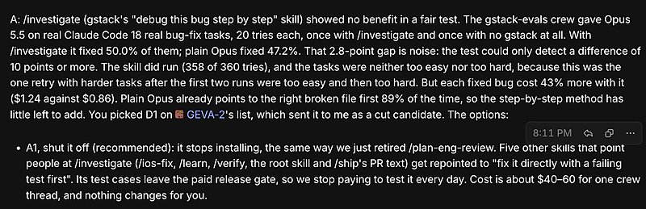
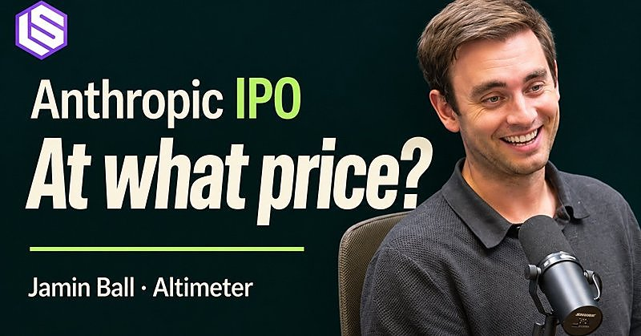

AI 日报 · 11月8日
让 Agent 进入真实工作流：工具协作、评测与授权边界
Builder 讨论在创作软件中嵌入 MCP，以及随模型进步持续精简 Agent skill；OpenAI 的安全模型与 GitHub 上榜的浏览器与工程技能仓库提供了落地参照。另附 Latent Space 对 Anthropic 招股文件的公开访谈。
Agent 工具
评测驱动
安全边界
公开访谈
4
Builder 动态
2
上榜仓库
1
公开视频
今日要点
深度对话
公开访谈：如何阅读 Anthropic 的招股文件
Latent Space 于 11 月 7 日发布对 Altimeter 的 Jamin Ball 的公开访谈，讨论 Anthropic 招股文件、融资与模型服务成本。以下仅概述节目讨论主题；商业判断属于嘉宾观点。
从招股文件看业务
节目讨论如何将收入增长、模型服务成本和资本开支放在同一张表中审视，提醒听众区分披露数据与投资推断。
算力投资需要时间维度
访谈将数据中心融资与长期需求预期联系起来；对未来利润的判断仍依赖使用量、成本和融资条件。
官方原文
安全模型的能力与使用范围
已检查 feeds.json 四条 RSS 与 OpenAI、Anthropic、Google 官方发布页；未把旧文标为 11 月 8 日新发。
Builder 动态
把 Agent 放进人的工具链
Thariq｜创作工具内置 MCP
他看好创作者应用直接提供 MCP：Agent 可做部分操作，专业用户则继续在原有编辑界面中协作。
Garry Tan｜持续用评测修订 skill
Garry Tan 主张用评测驱动 Agent skill 迭代，模型更新后删去不再必要的指导。他以自己移除一个调查 skill 为例；这是个人经验，不是普适基准。

Swyx｜持续追踪 Anthropic 上市进程
Swyx 表示将每周跟进 Anthropic IPO 的后续，直至结果明确。这里记录的是他的报道计划，不代表上市时间或结果已确定。

Zara Zhang｜个人网站展示作品与判断
她认为个人网站比职位列表更能呈现一个人的作品、审美和思考；这为 Builder 的长期内容归档提供了一个视角。
GitHub Trending
浏览器操作与工程技能上榜
取自 11 月 8 日 GitHub Trending；星标与分叉为本次 GitHub API 快照，功能按仓库 README，未独立测评。
今日思考
工具接口让 Agent 进入现有软件，评测让 skill 能随模型变化，而权限与授权范围决定它可以做什么。今日一问：你的 Agent 每次调用工具时，能否说明输入来源、允许的操作与可复查的结果？
今天可做：挑一个创作或浏览器任务，记录工具调用和人工接续点，再加入一条越界测试。
参考来源